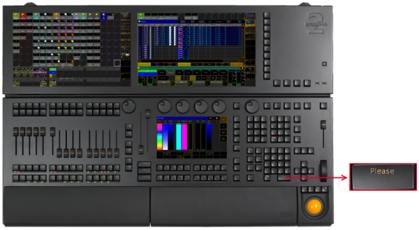
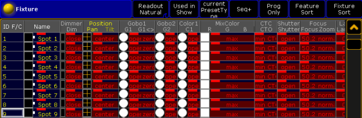
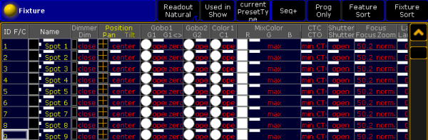

Please Key
The key Please is located in the command area below the number pad.

Location key Please
- Pressing Please executes keywords entered into the command line. This is the same function as pressing Enter on an external keyboard or pressing Please on the keyboard in the keyboard drawer.
- Pressing Please Please activates all attributes of the current fixture or channel selection in the programmer.

Fixture sheet with active attributes in the programmer
- Pressing Please again deactivates all attributes of the current fixture or channel selection in the programmer.

Fixture sheet with deactivated attributes in the programmer
- Pressing and holding
 + Please sets the cursor in the command line.
+ Please sets the cursor in the command line.

Command line with the cursor blinking